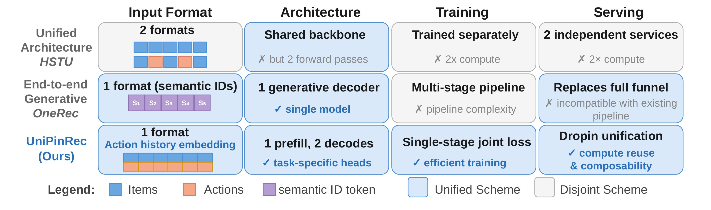
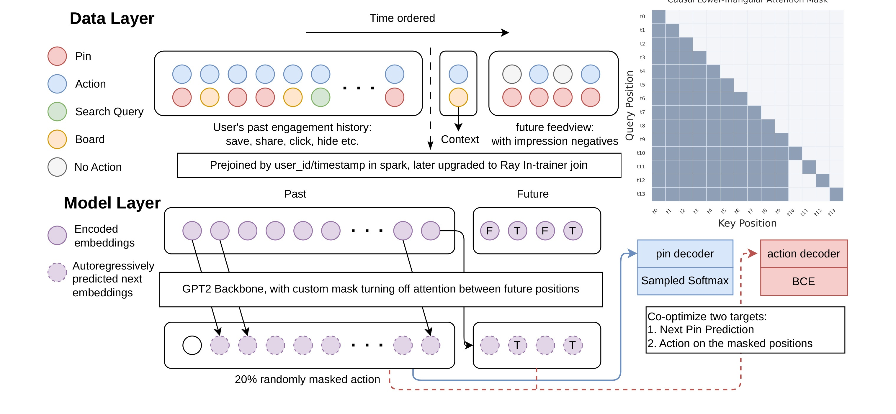
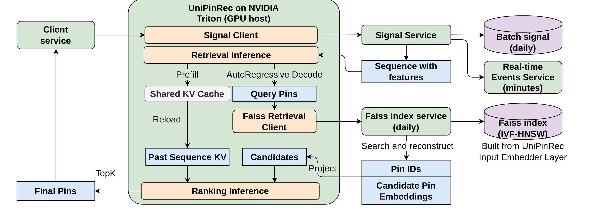
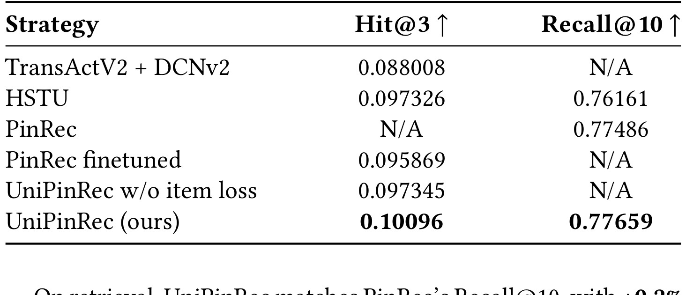
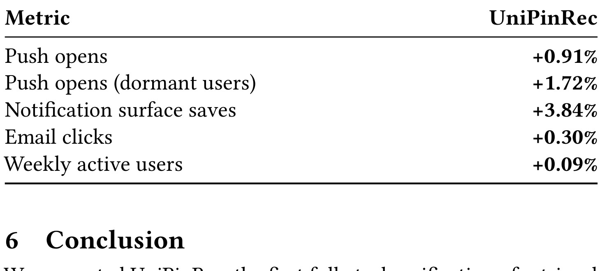

UniPinRec 这篇论文的唯一论文入口是 arXiv:2606.00422，标题为 “UniPinRec: Unifying Generative Retrieval and Ranking at Pinterest Scale”。作者全部来自或曾在 Pinterest 参与该工作，论文把它定位为在 Pinterest 核心推荐场景中落地的检索与排序全栈统一系统。代码/项目页状态：本轮只核验 arXiv 页面和 PDF，没有核验到独立开源仓库或项目页。主类别为推荐算法，次级标签包括 generative recommendation、retrieval-ranking unification、industrial recommender serving、KV-cache reuse。
1. 背景和问题
UniPinRec 讨论的不是“能否再训练一个更大的序列推荐模型”，而是工业推荐漏斗里一个很实际的重复建设问题：召回和排序都在用大 transformer 编码同一段用户行为历史，但它们通常有独立输入格式、独立训练数据、独立目标函数和独立 serving 服务。召回阶段要在百万级 item corpus 里毫秒级找候选，所以更适合 ANN dot-product 这类候选无关打分；排序阶段只面对几百到几千个候选，可以用 candidate-aware 的交叉注意力或丰富特征做更细的判断。两者算力预算不同，监督来源不同，线上回滚和 A/B 归因也不同，因此过去系统即使“架构上都叫 transformer”，仍然难以真正共享计算。
论文把目标定义为 full-stack unification：同一输入格式、同一模型骨干、同一训练阶段，并且能嵌入既有生产服务栈。这个定义很重要，因为很多相邻工作只完成了一部分。HSTU 一类方法统一了 transformer 范式，但 retrieval 使用非 interleaved 序列，ranking 使用 item/action interleaved 序列，训练和 serving 仍然是两套链路；OneRec、OneRanker 这类端到端生成式方法用 semantic ID 自回归生成候选，形式上统一了漏斗，却需要替换完整生产漏斗，对 Pinterest 这种已有 ANN、ranker、blender、监控和回滚体系的平台来说迁移成本很高。UniPinRec 的取向更保守也更工程化：保留 ANN 检索、cross-attention 排序和 Triton/Faiss 生态，把用户历史编码这一项最重的成本尽量只付一次。

Figure 1 是理解论文问题边界的入口。横轴不是模型层数或指标，而是 input format、architecture、training、serving 四个系统维度；纵向对比 HSTU、OneRec 和 UniPinRec。HSTU 在架构层共享了骨干思想，但需要 retrieval/ranking 两种输入格式，训练分离，serving 也是两次 forward。OneRec 用 semantic ID decoder 替代全漏斗，可以做到单模型，但代价是多阶段生成式 pipeline，并且不容易作为现有推荐漏斗的 drop-in 模块。UniPinRec 则明确选择“行动历史 embedding”作为单一输入格式，先做一次 prefill，再分成 retrieval decode 和 ranking decode 两个任务头，并把训练压成单阶段 joint loss。图里最关键的信息是：作者不是把“统一”当作模型结构口号，而是把它拆成四个可验收接口；只要其中任一维度仍分裂，线上系统就会继续重复编码历史、重复维护索引或重复付服务成本。
从业务链路看，这个问题在 Pinterest 场景中尤其尖锐。用户历史包含 Pin、Search Query、Board、action 等多模态、多行为事件；检索模型需要把历史转成可 ANN 搜索的 query embedding，排序模型又要根据候选和历史预测 click、save、hide 等 action 概率。如果检索和排序分别训练，排序的强监督无法反向帮助召回表示，召回的全 corpus 视野也无法正则化排序；如果分别服务，ranker 必须重算历史 self-attention，成本主要浪费在和召回完全重复的 past sequence 编码上。论文提出的线上结果也说明作者真正关心的是系统总收益：约 +1% engagement lift、-11.1% e2e latency、+63.6% QPS，而不是单个离线榜单分数。
这篇论文的难点因此有三层。第一是任务用法差异：retrieval 是 candidate-independent 表示加 ANN，ranking 是 candidate-aware action prediction，两者不能简单共用最后一层。第二是训练样本差异：retrieval 依赖用户正反馈行为序列和 sampled softmax，ranking 需要包含 impression negatives 的 feedview slate，否则模型看不到“曝光但没互动”的候选。第三是 serving 约束：统一模型如果只是把两个任务塞到一个 checkpoint 里，却在线上做两次完整 forward，就不会比两模型部署更便宜。UniPinRec 的贡献正是把这三层同时纳入：MAM 处理输入和无泄漏 action 预测，blended examples 处理训练数据，cross-stage KV cache 处理服务成本。
2. 方法
2.1 从 PinRec 到 Masked Action Modeling
UniPinRec 建在 Pinterest 既有 PinRec 之上。PinRec 是 generative retrieval 模型：每个 item 使用 OmniSage、PinCLIP 等预训练表征，经过 MLP 投影成 L2-normalized embedding；给定用户在时间上排序的正反馈历史 H(u,t_max)，decoder-only transformer 预测下一步可能互动的 item embedding，再用 sampled softmax 对正样本和 in-batch/random negatives 做区分。论文中的公式 (1) 是这个检索目标：正样本分数使用预测向量和候选 item embedding 的内积，并用候选采样概率 Q(i_c) 做频率修正；负样本集合 N 进入分母。这个目标适合 ANN 检索，因为模型输出的是 candidate-independent query representation。
要把同一个骨干扩展到 ranking，模型必须预测每个候选上不同 action type 的二分类概率，例如 click、save、hide。直接沿用 HSTU 的 item/action interleaving 会带来两个问题：序列长度翻倍，服务计算增加；更重要的是 retrieval 原本的非 interleaved 输入格式被破坏，统一输入格式无法成立。UniPinRec 的 Masked Action Modeling 采用另一种做法：不把 action 作为额外 token 插在 item 后面，而是把 action multi-hot vector 经过线性层变成 action embedding，再和 item representation 沿 feature 维拼接，最后由 input projector 映射进 transformer hidden dimension。这样每个时间位置仍然是一个 token，retrieval 的历史长度和位置结构保持不变。
MAM 的核心是 masking schedule。对用户已观测历史中的 action，每个 action 以概率 p_mask 独立 mask；对未来 feedview 的候选位置，action 永远 mask，因为线上推理时候选是否被点击或保存本来就是未知量。被 mask 的位置不会用“全 0”表示，而是用额外的 [MASK] class，使模型区分“动作未知”和“明确无动作”。论文公式 (2) 描述无泄漏条件：当 m_i=0 时，隐藏状态 z_i=f_theta(tildePhi_i, {tildePhi_t}_{t<i}, tildePhi_i independent of a_i)，action head h_psi^c(z_i) 只能依赖当前 item 特征和过去可见的 masked action 历史，不能偷看当前要预测的 action 标签。这个设计既保留 retrieval 输入，又给 ranking 提供可学习的 action prediction 目标。

Figure 2 把方法主线画成两层：Data Layer 和 Model Layer。Data Layer 左侧是过去 engagement history，其中每个位置可以是 Pin、Action、Search Query、Board 或 No Action；右侧是 future feedview，包含 impression negatives。图中“20% randomly masked action”对应论文后续最优的 p_mask=0.2。Model Layer 中，过去历史和未来候选一起进入 GPT2 backbone，但使用自定义 mask 关闭 future positions 之间的 attention；上方 autoregressively predicted next embeddings 进入 pin decoder 和 sampled softmax，对应 retrieval；右侧 encoded embeddings 进入 action decoder 和 BCE，对应 ranking。图底部写明两个目标被 co-optimize：Next Pin Prediction 和 Action on the masked positions。这个图必须放在方法章，因为它不是问题动机图，而是解释 UniPinRec 如何在一个 forward pass 中同时保留召回和排序监督。
2.2 联合目标：检索 sampled softmax 与排序 BCE
在 joint training 中，过去序列 Phi_1,...,Phi_n 保持与 retrieval 完全一致的长度和位置结构，因此仍然可以对每个未 mask 的过去位置施加 next-item prediction。论文公式 (3) 把 L_item 写成对历史位置上的 sampled-softmax loss 求平均，它继承 PinRec 的 retrieval objective。未来候选 Phi'_1,...,Phi'_k 被拼接在过去序列之后，完整序列一次通过 transformer；候选位置不能互相 attend，只能 attend 到过去历史。这一点让每个候选的 ranking score 不受同 batch 其他候选排列影响，同时把 attention 复杂度从 O((n+k)^2) 降成 O(n^2+n k)。
排序侧是公式 (4) 的 L_action。对每个 action type c 都有一个 MLP head h_psi^c 输出 scalar logit，再用 per-head weight w_c 平衡 save、click、hide 等行为的重要性。loss 由两部分组成：第一部分在被 mask 的过去位置 M_past 上预测历史 action，起到 denoising 和密集监督作用；第二部分在 k 个未来候选位置上预测候选 action 标签，正是 ranking 需要的 per-candidate action probability。最后公式 (5) 把总损失写成 L = L_item + L_action。这不是简单多任务拼接，因为 item embedder、input projector 和 transformer backbone 都同时从 retrieval 与 ranking 监督中更新；论文后续 Table 1 也证明，ranking-only 或先 retrieval 后 finetune 都不如 joint optimization。
为了把上述几个目标放在同一个可复核框架里，方法章可以直接按论文原公式写成下面这个合成目标，而不是额外发明抽象指标：
符号解释：H 是用户过去行为序列中用于 next-item prediction 的位置集合；L_s 是 PinRec 继承下来的 sampled-softmax 检索损失；M_past 是历史中 action 被 mask 的位置集合；C 是 action type 数量；w_c 是每个 action head 的权重；h_psi^c 是第 c 个行为的 MLP head；z_i 是历史位置 hidden state，z'_j 是未来候选位置 hidden state；a_i^{(c)} 和 a_j'^{(c)} 分别是历史位置与候选位置上的二值行为标签；k 是 future feedview 里的候选数。这个公式在阅读上有两个作用：一是确认 UniPinRec 没有把排序目标放到第二阶段 fine-tune，而是在同一 forward 内和检索目标共同更新骨干；二是确认 ranking 的监督既来自过去被 mask 的 action，也来自未来 feedview 候选，因此它不是只在正反馈序列上学习 next item。
从实现视角看，公式里的两个平均项也对应两种不同的数据密度。L_item 只关心历史序列中的下一 item，因此负样本主要来自 in-batch 和 random negatives；L_action 必须看到曝光候选的未互动样本，否则 save/click/hide head 会高估所有候选的正反馈概率。w_c 的存在说明多行为目标不能简单等权相加，因为 save、click、hide 在频率、业务价值和噪声上都不同。若一个平台要迁移 UniPinRec，最先要确认的不是 transformer 层数，而是能否稳定构造 M_past、future feedview slate、action vocabulary 和 per-head weights；这些字段缺任意一个，joint loss 就会退化为“检索模型旁边挂一个弱排序头”。
这套目标设计的关键收益有三点。第一，不增加上下文长度。action 被拼接到 feature 维度，不变成新 token，因此不会像 interleaving 一样把 long user history 的 self-attention 成本翻倍。第二，权重可以从 retrieval checkpoint 初始化。由于 past sequence 的 token 语义和位置结构仍然是 retrieval 输入，PinRec 学到的用户兴趣表征不会被输入格式切断。第三，随机 action masking 让模型学习在 action 缺失时依赖 item content 和历史上下文，线上候选 action 全未知时更匹配推理分布。MAM 在这里不是 BERT 式预训练技巧的直接搬运，而是为 retrieval/ranking 共用输入格式服务的工程约束解。
2.3 Blended training examples 与数据基础设施
训练统一模型还需要统一样本。传统 retrieval 数据是 action-only sequence：只记录用户按时间发生的正向互动；ranking 数据是 impression log：记录一次 feedview 里展示给用户的完整 slate，以及哪些 item 被 click/save/hide，哪些只是曝光未互动。若只用前者，ranking 学不到曝光负样本；若只用后者，retrieval 缺少跨 corpus 的 next-item 生成训练。UniPinRec 的 blended example 把过去 action sequence 和未来 feedview 配对：每个位置是 (Pin, surface, action, timestamp) tuple，action 覆盖 impression-only、click、save、share、hide 等词表。
论文特别强调 feedview-centric dataset construction。对一个训练样本，past 是某次请求之前的行为历史，future 是随后一次 feedview 的完整 impression slate，包含 engagement labels。由于 engagement events 相对 impression 很稀疏，训练管线会保留 10% non-engaged feedviews 来提高稀有 engagement class 的有效密度；评估时则不下采样，而是用 randomized replay dataset 保留自然流量分布，避免离线指标被训练采样口径污染。这个细节很工程化，但影响很大：如果训练和评估都按同一种下采样分布，ranking head 可能只是在人工平衡样本上有效，无法说明线上真实曝光分布。
早期构造 blended examples 可能需要离线 join，把同一用户的历史复制到多个 feedview 样本里，造成 fanout 和数据膨胀。论文提出 Ray in-trainer join：用户 action sequences 和 feedview records 分别维护为按 user_id hash-bucketed 的 Iceberg tables，在训练 dataloader 内存中按桶 join。这样 context length、sampling ratio、filtering 都变成训练时参数，而不是重新生成大表的离线成本。对大规模推荐系统来说，这一段不只是数据工程补充，而是 full-stack unification 的必要条件；没有这层，single-stage joint loss 在样本层面就无法稳定供给。
2.4 Co-serving、Faiss 与跨阶段 KV cache
Serving 设计是 UniPinRec 最值得单独读的部分。统一模型只有在服务时少算一遍历史编码，才有资格替代两套模型。论文保留 PinRec 的 Triton ensemble：服务先组装用户历史，运行 autoregressive retrieval，生成 query embeddings，再通过 CPU-hosted Faiss index 做 ANN lookup。UniPinRec 在 Faiss 后面新增 ranking node，而不是替换整个下游漏斗。ranking node 接收 ANN 返回的 candidate Pin IDs 和 candidate embeddings，同时拿到 retrieval 阶段写入的 KV-cache slot id；它不再重跑 full user history，只对候选 token 做 incremental forward，并让候选 attend 到缓存里的历史 KV。

Figure 3 展示了真实服务栈：Client service 调用 GPU host 上的 UniPinRec Triton；Signal Client/Signal Service 负责用户序列特征，实时事件分钟级写入，batch signal 日级更新；Retrieval Inference 先 prefill 历史并 autoregressive decode query pins，同时把 shared KV cache 暴露给后续 Ranking Inference；中间 Faiss index service 在 CPU 上做 IVF-HNSW 检索，并通过 search_and_reconstruct 同时返回 candidate Pin IDs 和已经存好的 candidate embeddings，避免 ranking 阶段再做候选 embedding fetch 或 embedder forward。图里的“Past Sequence KV”是关键路径：ranking 不是复制 retrieval 逻辑，而是读取 retrieval 已经算好的历史状态。
跨阶段 KV cache 的复杂度收益可以用论文文字公式概括。历史 self-attention 的主成本是 O(n^2)，候选对历史的 attention 是 O(n k)。如果 retrieval 和 ranking 独立部署，ranker 要重新付 O(n^2)；UniPinRec 让 retrieval 先把历史 K/V 写入共享 GPU memory pool，ranking 只复制对应 slot 到自己的 decode cache，实际 ranking 增量成本接近 O(n k)。由于 retrieval 和 ranking 是两个 OS processes、两个 CUDA contexts，naive serialization 会产生 GPU-host-GPU roundtrip，论文改为预分配 [L,S,H,n,D] 形状的 GPU pool，并通过 CUDA IPC handles 映射到 ranking 进程地址空间。slot round-robin 复用，ranking consumer 按请求 slot 读取 past KV。
最后是推理优化。UniPinRec 使用 flex attention 把 block-sparse attention pattern 编译成 fused CUDA kernels；同时尝试 FP8 mixed precision，用 Transformer Engine 的 fused layernorm、linear projection 和 activation 减少中间 full-precision materialization。训练中 forward 用 E4M3，backward 用 E5M2，以平衡动态范围和精度。论文承认 FP8 带来约 0.5% offline metric drop，但换来吞吐优势；线上实验暂时采用 bf16 flex compile，因为 FP8 kernels 需要等待更大 batch 来满足 shape constraints，会提高 QPS 但可能增加 latency。这个取舍说明 UniPinRec 并不是只追求最低单次 forward 延迟，而是在 GPU 活跃度、batch shape、QPS 和端到端 latency 之间做生产配置。
3. 实验结果
3.1 RQ1：统一训练是否同时保住召回和提升排序
论文把实验分成三个研究问题：RQ1 看统一模型能否同时做 retrieval 和 ranking；RQ2 看 co-serving 能否减少重复计算；RQ3 看这种模块化扩展能否在线上真实推荐系统中带来 engagement lift。离线主实验使用 Board More Ideas feed 数据。比较对象包括 contemporarily trained production ranker TransActV2+DCNv2、HSTU、production retrieval model PinRec、PinRec finetuned、UniPinRec w/o item loss，以及完整 UniPinRec。指标上，Hit@3 衡量 save head 排序表现，Recall@10 衡量 retrieval 从未来 feedview 互动目标中找回 top10 的能力；两列来自不同评估数据集，因此不能把 Hit@3 和 Recall@10 互相换算。

Table 1 给出最直接的结论。TransActV2+DCNv2 的 Hit@3 是 0.088008；HSTU 是 0.097326，同时 Recall@10 为 0.76161；PinRec 只有 retrieval 能力，Recall@10 是 0.77486；PinRec finetuned 的 Hit@3 是 0.095869；UniPinRec w/o item loss 的 Hit@3 是 0.097345；完整 UniPinRec 的 Hit@3 达到 0.10096，Recall@10 达到 0.77659。作者据此认为，UniPinRec 对生产 ranker 有约 +14.7% ranking 提升，同时相对 PinRec 的 Recall@10 还有约 +0.2% 边际提升。这个表最重要的不是某个绝对值，而是两个对照：只做 ranking action loss 的版本不如加上 item loss 的完整版本，说明 retrieval objective 对 ranking 表示有正向正则；先用 PinRec 再 finetune ranking 也不如从一开始 joint training，说明冻结或半冻结 embedder 会限制 item representation 为 action prediction 适配。
HSTU 对照也帮助界定 UniPinRec 的贡献。HSTU 在同等 context length budget 下不如 UniPinRec，原因并不只是模型名字不同，而是 interleaved paradigm 带来的输入和训练分裂仍然存在。UniPinRec 用 non-interleaved MAM 保持 retrieval input compatibility，因此可以用同一历史表示服务两个任务。对于工业部署，这个差异比离线 Hit@3 小数点更关键：如果 retrieval recall 下降，即使 ranking 提升也可能被候选池损失抵消；如果 ranker 提升但召回服务不能复用 KV，则线上总成本可能不可接受。Table 1 同时回答了这两类担忧。
3.2 RQ2：KV-cache reuse 与服务效率
RQ2 关注的是统一模型有没有实际省算力。Table 2 在 NVIDIA L40S 上测单次 ranking forward，设定 B=8、n=992、k=656、L=12。baseline 是 bf16 / SDPA / torch.compile 的 prefill，latency 25.72ms，speedup 1.00x；仅换 flex attention 的 prefill 到 19.70ms，speedup 1.31x；fp8 prefill 约 18.9ms，speedup 1.36x。真正大的变化来自 decode path：bf16 SDPA compile decode 是 10.42ms，2.47x；bf16 flex compile decode 是 8.57ms，3.00x；fp8 flex graph decode 是 6.56ms，3.92x。这个表说明 KV-cache reuse 的贡献大于单纯 dtype 或 kernel 优化，因为它改变的是 ranking 是否重算历史 prefill。
Table 3 把效率放进在线条件。在受控 GPU activity/budget 下，bf16 decode flex compile 相对 baseline e2e latency 降低 11.1%，QPS 提升 63.6%，也是线上 A/B 使用的配置；fp8 decode flex graph QPS 提升 109.1%，但 e2e latency 反而 +6.7%，因为为了满足 Transformer Engine flatten leading dimension 是 8 的倍数，需要等待和聚合更大 batch，尤其 autoregressive retrieval step 中 S=1 时更受限制。因此，论文没有把最快离线 forward path 直接上线，而是选择端到端 latency 更稳的 bf16 flex compile。这个判断体现了工业推荐服务常见现实：吞吐、延迟、GPU 利用率和业务峰值不可能只用一个 microbenchmark 排序。
3.3 Ablation：mask 比例与模型扩展
MAM 的关键超参是 p_mask。Table 4 比较 0.0、0.1、0.2、0.3 四个值：不 mask 的 Hit@3 为 0.09923；0.1 到 0.10078；0.2 到 0.10096；0.3 轻微回落到 0.10075。作者解释为，任意 masking 都优于 no masking，说明 action prediction 的额外监督和 denoising regularization 有帮助；但过高 masking 会从历史中移除太多有效行为信号，因此 0.3 开始收益递减。这个消融支持 Figure 2 中 20% randomly masked action 的设计，不是任意设定。
Figure 4 研究 model scaling，横轴是 normalized relative FLOPs，纵轴是 Hit@3。作者分别改变 transformer depth (2,4,8,12,24; S=1024) 和 sequence length (256,512,1K,2K; L=12)。两个方向都持续提升，说明 unified model 尚未在容量上饱和；但成本性质不同：depth 近似线性增加计算，sequence length 会因 attention 带来更强的二次成本。论文据此提出 sequence compression 是后续方向，因为长上下文对用户兴趣建模有明显质量潜力，但服务成本更难压。这里的结论与 KV-cache reuse 形成闭环：如果历史越来越长，避免 ranking 重算历史就更有价值。
3.4 RQ3：线上 A/B 是否转成真实 engagement
线上实验采用增量 rollout，而不是一次替换完整漏斗。Baseline 是 PinRec retrieval 直接返回 K(<3000) candidates 给下游排序；UniPinRec 是 unified model 先 ANN overfetch L0，再用 ranking head 做 L1 action scoring，返回 top K refined candidates 给下游生产 ranker。作者特别说明，线上仍然把 refined candidates 送入基于 TransAct V2 的 downstream production ranker，以便刚性验证候选质量改进。这意味着离线 ranking lift 会被下游 ranker/blender 稀释；如果线上仍有显著 engagement lift，说明 L0+L1 的候选改写确实带来额外信息。
Board More Ideas 场景中，UniPinRec 支持 Board 作为 Pins 和 search queries 之外的新序列模态。Table 5 显示，UniPinRec L0+L1 相对 PinRec baseline 带来 +0.95% BMI surface saves 和 +0.08% site-wide saves。对一个日活规模很大的核心 surface，+0.95% surface saves 已经是有意义的线上收益；site-wide saves 仍为正，则说明它不是只在局部 surface 内挪动 engagement。

Table 6 是线上证据里更完整的一张表。UniPinRec 相对 PinRec baseline 在 push opens 上 +0.91%，在 dormant users 的 push opens 上 +1.72%，notification surface saves 上 +3.84%，email clicks 上 +0.30%，weekly active users 上 +0.09%。这张表值得细读：最大提升不是一般 push opens，而是 dormant-user push opens 和 notification surface saves，说明更好的候选排序对重新激活低频用户和提高通知落地后的保存行为更敏感。WAU +0.09% 看起来小，但作为平台级周活指标，它比单 surface engagement 更难被局部优化影响。该表也限制了外推边界：实验对象是 Pinterest notifications，指标按 unique-user basis 计量，不能直接推断到所有推荐/广告场景；但它证明 L0+L1 的统一服务不是只在离线 Hit@3 上好看。
整体看，实验链条比较完整：Table 1 证明 joint training 的任务质量，Table 2/3 证明共享 KV cache 的成本意义，Table 4/Figure 4 解释 MAM 和容量扩展，Table 5/6 证明线上 engagement。仍需注意的是，论文没有开源数据、特征、完整服务配置和 downstream ranker 细节；因此外部复现只能验证机制合理性，很难复算 Pinterest 级线上收益。
4. 总结
UniPinRec 的价值在于把“检索和排序统一”从模型论文常见的 architecture sharing 推到生产系统可验收的四个接口：输入格式统一、模型骨干统一、训练阶段统一、serving 计算复用。MAM 解决输入格式与 action supervision 的矛盾，blended feedview examples 解决检索正样本和排序曝光负样本的训练数据矛盾，cross-stage KV cache 解决线上重复历史编码的成本矛盾。对推荐系统读者来说，它最值得借鉴的不是某个新层或新 loss，而是如何围绕既有 ANN、Triton、Faiss、下游 ranker 和 A/B 回滚机制做渐进式统一。
我对这篇论文的判断是：它属于强工程约束下的系统型推荐论文，离线指标只是支撑材料，真正贡献在于把统一模型部署成 L0+L1 co-serving 模块并拿到线上收益。相比完全端到端生成候选的路线，UniPinRec 没有试图替换全部生产漏斗，因此更容易在已有平台里落地；相比只共享 transformer backbone 的路线，它又通过 KV cache 和单阶段 joint loss 让共享真正转成成本和指标收益。
局限也需要明确。第一，它当前只统一 retrieval 与 upper-funnel ranking，没有替代 L2 ranker；L2 涉及 score calibration、训练日志和运营工具，难度可能更高。第二，论文很多关键条件依赖 Pinterest 内部表征、Faiss index、Triton ensemble 和流量形态，外部平台即使复现 MAM，也未必复现同样的 QPS/latency 曲线。第三，线上实验采用 L0+L1 refined candidates 后仍过 downstream ranker，收益来源可能同时包含召回候选质量、轻排过滤和下游 ranker 交互，外部读者无法完全拆解归因。第四，FP8 路径展示了 QPS 潜力但有 latency tradeoff，说明极致吞吐优化还需要结合线上 batch shape 和请求到达分布。
后续跟进可以看三件事。一是 UniPinRec 是否扩展到 L2 ranking、Search、Ads 等更复杂 surface，尤其是 score calibration 和多目标业务约束如何接入 joint loss。二是 sequence compression、retrieval-depth control 或 iterative retrieval 是否能利用论文结尾提到的 RAG 类比，把长历史质量收益和服务成本进一步解耦。三是与 RelayGR、OneRanker、OneRec、HSTU 等路线做并表比较：哪些方法统一的是表示，哪些统一的是训练，哪些统一的是 serving，哪些真正保留生产漏斗可组合性。若未来代码或更细附录释放，优先复核 MAM mask 实现、candidate attention mask、KV pool 跨进程读写以及线上指标的统计口径。